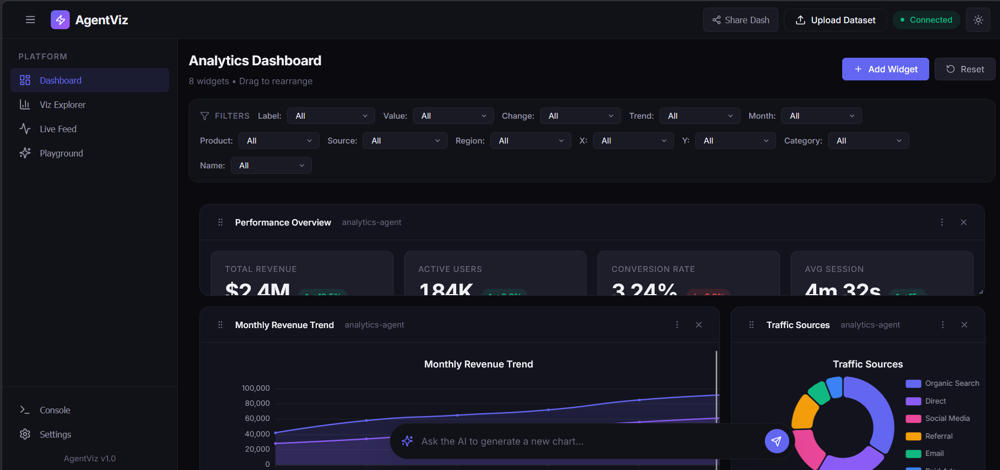
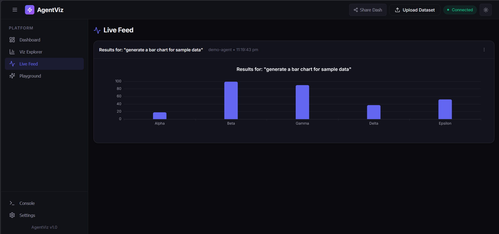

Platform Overview
What separates Wizcraft AgentViz from traditional charting libraries?
Traditional dashboards require manual configuration. Wizcraft is built for the AI era. You write your statistical algorithms in Python (e.g. using LangGraph + Pandas), and your agent automatically pushes standardized JSON viz_config payloads to the UI via Socket.IO.
The UI platform instantly intercepts these packets securely, generating interactive, deeply native charts that adapt to data bounds—from standard Pie curves to 3D Scatters and dynamic Drag-and-Drop Pivot Tables.
Dashboard UI Snapshots
Observe the parallel widget rendering engine executing complex multivariate data.


Comprehensive Features Toolkit
20+ Advanced ECharts
Full support for Area, Bar, Scatter, Bubble, Radar, Funnel, Heatmaps, and specialized metrics out of the box with auto-calculated visual mapping limits.
3D GL Analytics
Deploy ECharts GL to render `scatter3D` and embedded vector projector tools natively for large datasets straight from your Python backends.
Statistical Intelligence
Upload raw CSV/JSON using the HTTP Data stream. Query your agent directly via the Floating Chatbot NLP UI seamlessly positioned in the active dashboard.
Custom Plugin API
Extend runtime natively with window.AgentViz.registerWidget. Remote React components can be injected dynamically by users without touching source code!
Drag & Drop Pivot Tables
Integrated react-pivottable allowing users to execute real-time cross-tabulations dynamically over massive JSON payloads dispatched by agents.
Universal Export & Serialization
Export any canvas immediately to PNG or raw layout Data to CSV. Serialize your entire active dashboard layout to a Base64 Hash to instantly share configured views via URL.
Cross-Filtering Data
The global useCrossFilter hook guarantees event-bus actions. Click a data bar in one visualization, and all other widgets filter automatically to match the selection.
Multi-Agent Live Feed Canvas
Watch incoming LLM payloads group automatically into parallel multi-column CSS grids based dynamically on their original agent_id footprints.
Deep Setup & Orchestration
Follow these sequences to construct the full React/Vite topology locally.
# Clone repository
git clone https://github.com/Aditya148/wizcraft.git
cd wizcraft
# Install 19.x React frameworks and ecosystem packages
npm install# Open Terminal 1: Spin up the Gateway (Socket.IO over HTTP Port 4000)
npm run server
# Open Terminal 2: Spin up the MFE Hot-Reload Host (Port 3000)
npm run dev# The platform allows Python processes to push datasets visually
# First, install python socketIO clients
pip install -r requirements.txt
# Run the Jupyer reference pipeline
jupyter notebook langgraph_agent_example.ipynb